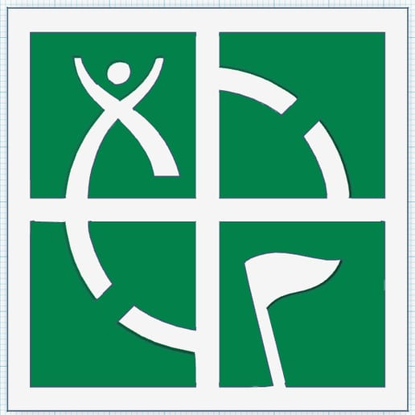
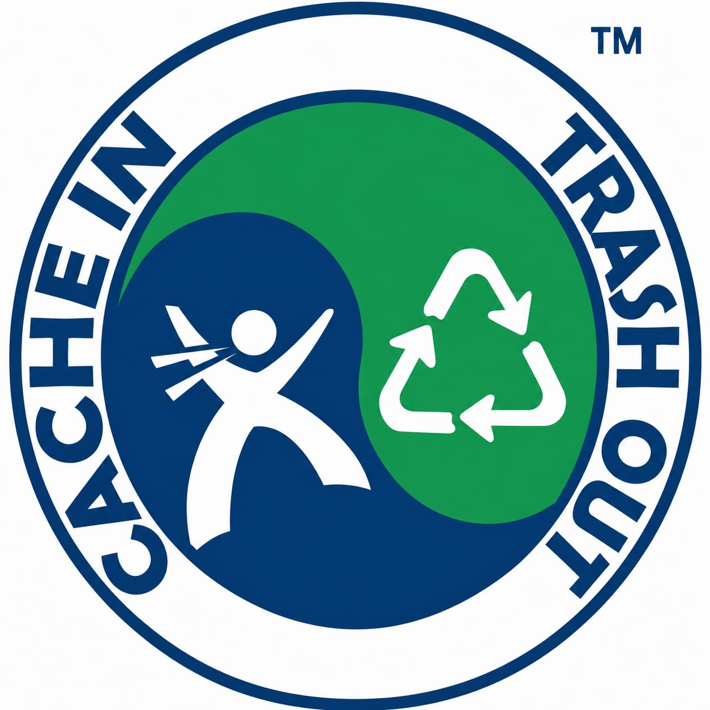
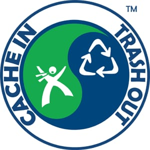

Interaktywny sprawdzian wiedzy · maks. 35 pkt
Rozwiąż zadania 1–6 — mierzony jest czas ich rozwiązywania.
Twój nick (wymagany):
Wszystkie kesze są w Gliwicach.



Z pól zaznaczonych kolorem żółtym wyjdzie hasło.
⏸️ Czas jest zatrzymany. To zadanie ocenia prowadzący.
Zadanie 7 (2 pkt) jest oceniane opisowo przez prowadzącego i nie jest wliczone do wyniku automatycznego (maks. automatyczny: 33 pkt).